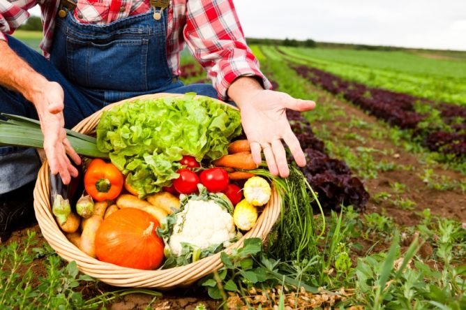

Alimentação e sustentabilidade: como ter uma alimentação sustentável?
A relação entre alimentação e sustentabilidade demonstra que a preocupação com os alimentos que ingerimos deve ir além de questões nutricionais e estéticas. Não que isso não seja importante, mas os impactos que a comida causa no planeta também são – e devem ser levados em conta. Há quem diga, inclusive, que para ser considerada uma alimentação saudável, ela também deve ser sustentável. Afinal, ar limpo e água potável são essenciais para a saúde e, se não escolhermos os alimentos corretamente, podemos estar contribuindo para a escassez ou até para o esgotamento desses recursos. Existe uma conexão entre tudo no Planeta e, por isso, é necessário ficarmos atentos ao que o nosso consumo está causando ao nosso redor, optando pela realização de escolhas mais sustentáveis, incluindo a alimentação sustentável.
O que é sustentabilidade?
O conceito de sustentabilidade pode ser explicado como o conjunto que reúne as ações e atividades humanas que tem como propósito suprir as necessidades dos seres humanos, sem comprometer a saúde do Planeta Terra e, portanto, o futuro das próximas gerações e até de si mesmo. A sustentabilidade não é contra o desenvolvimento da economia, mas preza para que isso seja feito de uma forma que não agrida o meio ambiente, ou seja, com a utilização de recursos naturais de forma inteligente, diferentemente do que vem acontecendo e que pode levar à escassez ou ao esgotamento dos mesmos. O tripé da sustentabilidade é baseado em três fatores: social, ambiental e econômico. Para que a sustentabilidade aconteça de fato, esses três princípios precisam estar interligados, uma vez que dependem um do outro para que haja a harmonia do ecossistema. Veja a seguir mais sobre cada um deles:
- Social: está relacionado com a busca do bem-estar de toda a sociedade, respeitando os direitos e espaços do outro, onde a natureza está incluída;
- Ambiental: o fator ambiental se refere ao consumo responsável dos recursos naturais, reduzindo ao máximo os impactos negativos que podem ser gerados ao meio ambiente;
- Econômico: a busca pelo crescimento econômico deve ser feita de maneira sadia, pensando sempre no curto, médio e longo prazo. A falta de programação nessa área pode trazer sérios prejuízos.